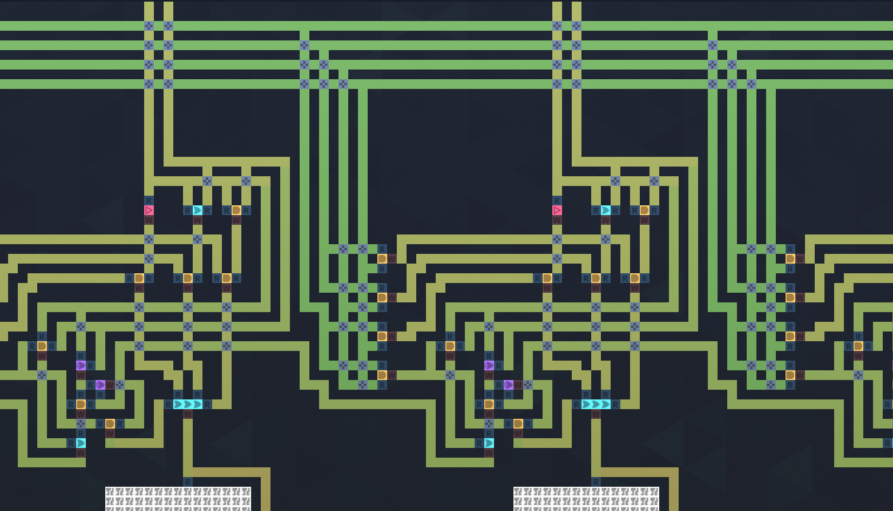
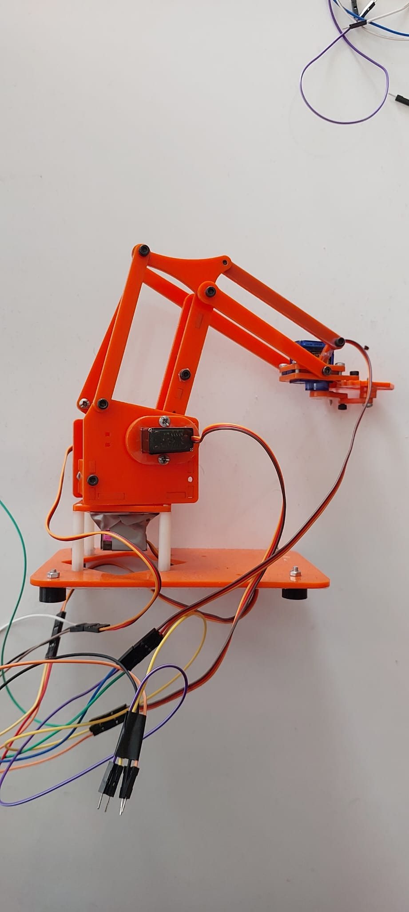
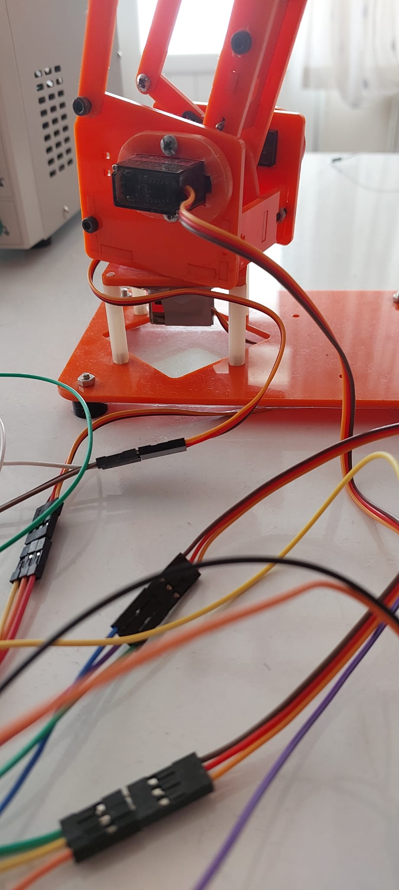
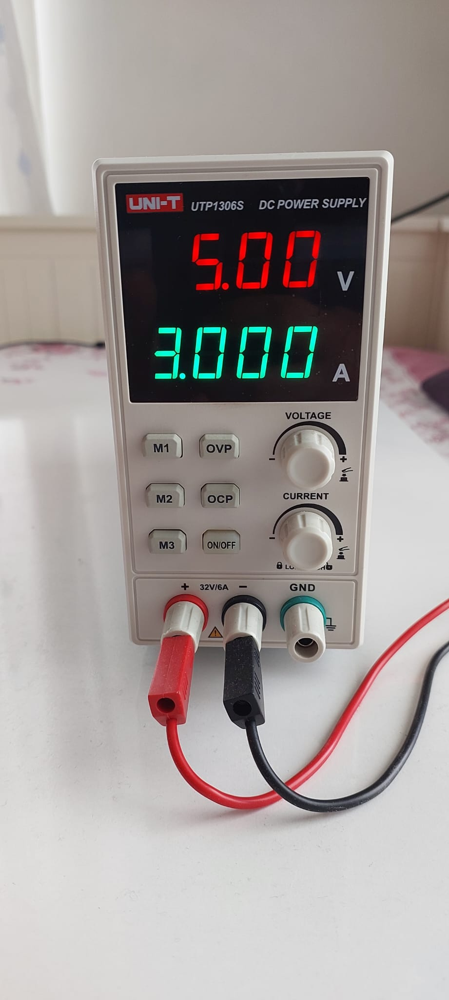
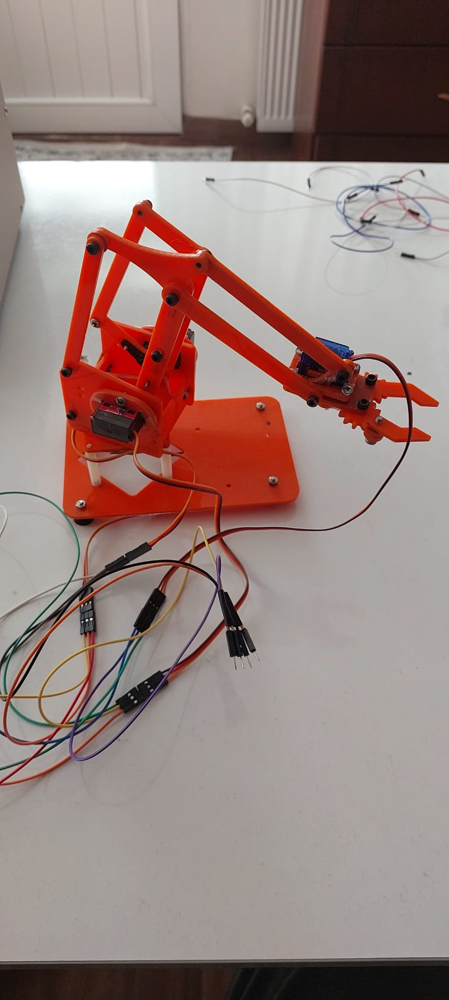

Bachelor of Computer Science
Seneca Polytechnic · Toronto, Ontario
Expected graduation: June 2028Toronto · Computer Science · Building toward robotics & systems
I work from the bottom up — digital logic, C++, embedded control, sensors, actuators, and physical machines. I care about what the software is actually doing to memory, timing, signals, and hardware.
Selected work · 2025—2026
Not a wall of identical cards. Each project below represents a different layer of the stack: logic, embedded control, robotics, and autonomous systems.

01A computing system built from the logic level upward.
I started with individual logic gates and 1-bit ALU slices, then scaled the design into an 8-bit ALU with decoder-controlled operations, ripple-carry addition, flip-flop memory, timer-driven selection, and an output stage.
The value of the project was not hiding complexity behind prebuilt blocks. It was tracing failures at the signal level — reversed carry propagation, decoder routing, carry leakage, and unstable storage behavior — until the complete system behaved as expected.

02A 4-DOF servo-driven arm built to turn control code into motion.
ScrapArm is a hands-on robotics platform for learning actuator control, mechanical linkage behavior, power delivery, coordinate thinking, and the messy reality of integrating hardware that has tolerances, current demands, and physical limits.
The prototype uses an Arduino-controlled servo architecture with an externally powered actuator system. Bench testing was performed at 5 V with a 3 A current limit while the arm was brought up joint by joint.




The next physical platform in the Scrap series.
ScrapRover extends the same build-first philosophy into mobile robotics: motor control, power distribution, sensing, navigation logic, and the iterative process of making software survive contact with a physical platform.
This section is already designed for the final build photo. Drop
scraprover-hero.jpg into the media folder and the layout will
switch from the reserved artwork to the real machine automatically.
 04
04
Leading a team through an unknown-task robotics challenge.
At Parkview Education Centre in Nova Scotia, I led a robotics team through a competition environment where the robot had to be prepared for changing tasks rather than a single scripted demo.
That experience shaped how I still build: define a big goal, break it into daily testable steps, observe what the system actually does, then iterate.
Software experiments
About / approach
I am more interested in why a system behaves the way it does than in making a demo look finished quickly.
My path has moved through software, digital logic, embedded prototypes, robotics, and industrial automation exposure. The common thread is that I like systems with consequences: memory changes, signals propagate, motors move, mechanisms bind, timing matters, and debugging requires observation.
C++ · Python · JavaScript · TypeScript · SQL
Memory · STL · concurrency · data structures · Linux
Arduino · digital logic · actuators · sensors · timing
Git · CMake · Docker · Conan · vcpkg · CI/CD
Education
Seneca Polytechnic · Toronto, Ontario
Expected graduation: June 2028Seneca Polytechnic · Toronto, Ontario
C++, systems, web, databases, Linux, software designNova Scotia, Canada
Exchange year · robotics team leadership · Acadia RobofestLublin, Poland
International high-school exchange programNext chapter
I’m looking for co-op opportunities where software meets systems, embedded hardware, robotics, infrastructure, or performance-critical engineering.